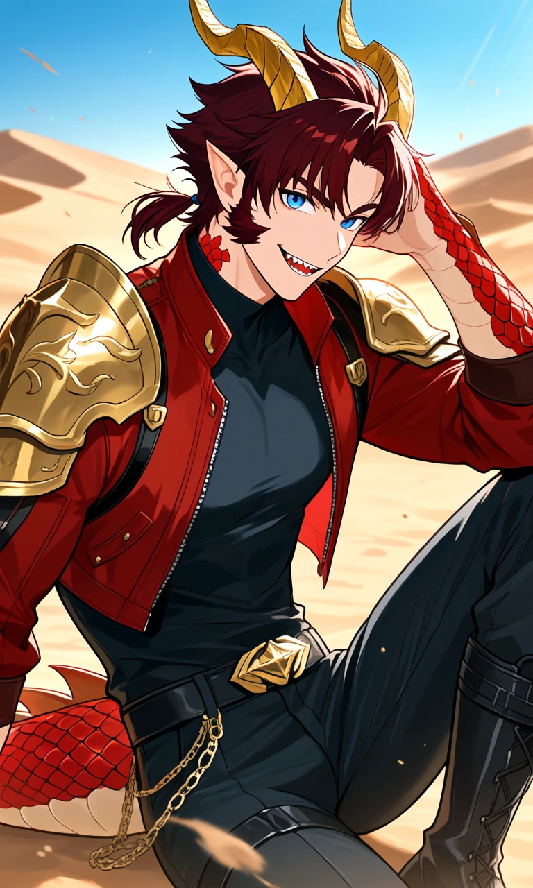
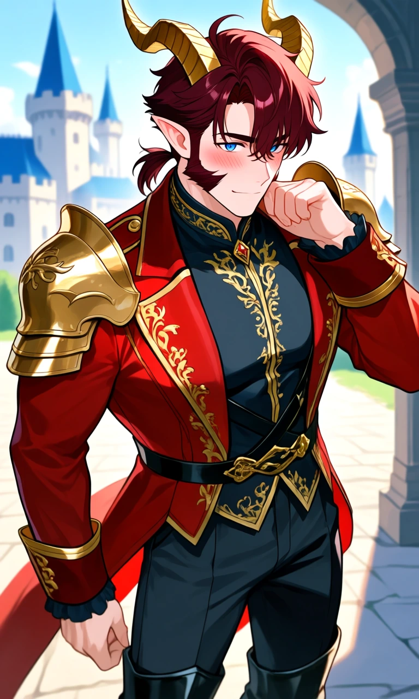
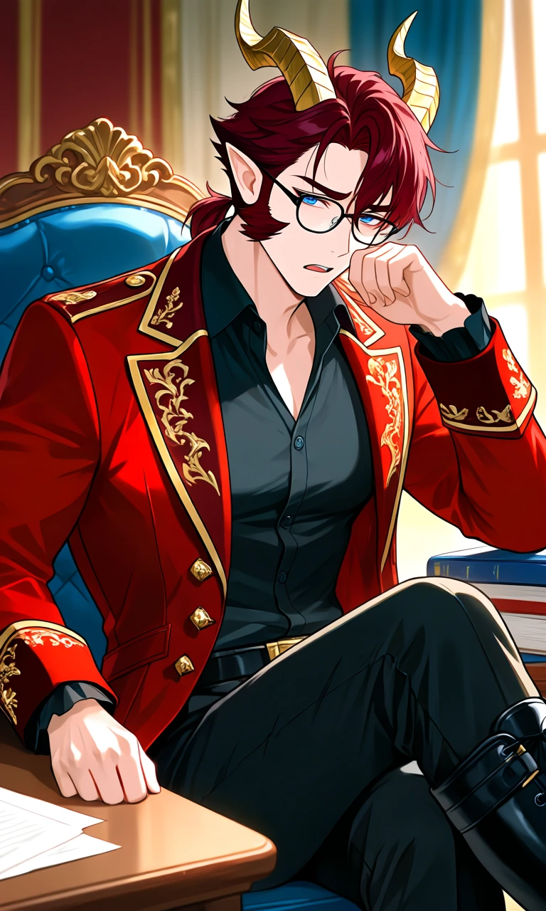

Asher
Male · Half-Dragon/Half-Human

Season 1


Character Prompt
The man with short dark red hair with dark red sideburns muttonchops in a low ponytail. He has blue eyes, gold dragon horns, and pointy ears. He has muscles. He has a red dragon scales on his body.
Main Outfit
He wears a black undershirt, black pants, black boots, and red jacket with gold shoulder armor.
Season 2


Character Prompt
The man with short dark red hair with dark red sideburns muttonchops in a low ponytail. He has blue eyes, gold dragon horns, and pointy ears. He has muscles.
Main Outfit
He wears a black undershirt with gold trim, black pants, black boots, and aristocrat red jacket with gold trim and gold shoulder armor.
After Season 2


Character Prompt
The man with short dark red hair with dark red sideburns muttonchops in a low ponytail. He has blue eyes, gold dragon horns, and pointy ears. He has muscles and wears glasses.
Main Outfit
He wears a black button down shirt, black pants, black boots, and aristocrat red jacket with gold trim.